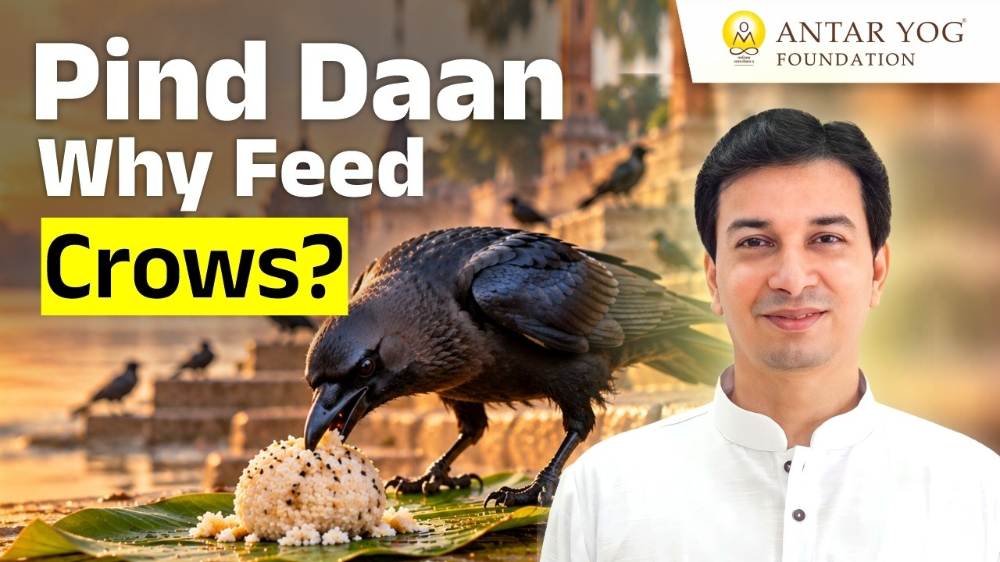

पितृ पक्ष आते ही घर-घर में श्राद्ध होता है, पिंड बनते हैं और छत पर कौवे का इंतजार होता है। पर क्या आपने कभी सोचा है कि यह सब क्यों?
पितर कौन हैं? श्राद्ध और तर्पण का वास्तविक अर्थ क्या है? ब्रह्मर्षि आचार्य उपेंद्र जी इन प्रश्नों को बहुत सरल भाषा में खोलते हैं। आइए, उनके साथ इस परंपरा के पीछे के ज्ञान को समझें।
पिंड क्या है? यह शरीर भी एक गांव है
पिंड का अर्थ है स्वयं श्राद्ध करने वाले का शरीर, मन और बुद्धि। प्रत्येक जीव को पिंड ही कहा जाता है।
पंजाबी जैसी कुछ भाषाओं में पिंड का अर्थ गांव भी होता है। आचार्य जी कहते हैं, ठीक वैसे ही यह शरीर भी एक गांव है।
इस गांव में बहुत सारे विकार (inner impurities) हैं, उल्टे-सीधे विचार हैं, वासनाएं (desires) हैं। इन सबको एक ओर रखकर इस पिंड को परमात्मा के लिए अर्पण करना होता है।
आपके भीतर के इस गांव में आज कौन से विचार और वासनाएं बसी हुई हैं?
सफेद चावल का पिंड क्या कहता है?
पिंड चावल का ही बनता है, इसलिए वह सफेद होता है। सफेद रंग सात्विकता (purity, harmony) का प्रतीक है।
इसका संकेत है कि हमारा मन, बुद्धि और पूरी चेतना (consciousness) सत्वगुणी होनी चाहिए। हमारी पूरी अवस्था उसी स्तर की होनी चाहिए। यह पिंडदान का पहला प्रतीक है।
क्या कौवा हमारा पूर्वज है?
बहुत से लोग मानते हैं कि पिंड खाने आया कौवा कोई पूर्वज है। किसी के चाचा, किसी की नानी, किसी के कोई और संबंधी।
पर आचार्य जी एक सीधा प्रश्न रखते हैं: अगर वही कौवा तीन-चार घरों में जाकर पिंड छूता है, तो वह किसकी नानी थी, किसकी चाची, किसके पिता? वे स्पष्ट कहते हैं कि कौवा किसी का पितर नहीं होता।
कौवा, कुत्ता या गाय, इनके पास एक विशेष शक्ति होती है। वे जान सकते हैं कि पितर (departed ancestors) आसपास हैं या नहीं। उन्हें इसका आभास होता है, अनुभव हो जाता है।
पितर आते क्यों हैं?
श्राद्ध की विधि में पूर्वजों का सबसे प्रिय आहार जानबूझकर रखा जाता है, ताकि वे आएं।
दूसरा कारण है उनका हमसे लगाव। जब हम उन्हें प्रेम से बुलाते हैं, तो उनके जल्दी आने की संभावना बढ़ जाती है।
और अगर उनका मन कहीं अटका हुआ है, यानी वे अभी मुक्त नहीं हुए हैं, तो वे हमारे आसपास अवश्य आएंगे।
कौवा: एक संकेतक
कौवे को समझ में आ जाता है कि आसपास कोई नकारात्मक उपस्थिति है। उसे खुद नहीं पता कि इसे पितर कहते हैं या कुछ और, पर वह आगे नहीं बढ़ता।
आचार्य जी एक प्रयोग सुझाते हैं। किसी सामान्य दिन अपनी बालकनी में कौवे को साधारण चावल खिलाइए, वह तुरंत खा लेगा। उसमें थोड़ा डर होता है, पर वह समझ लेता है कि आप उसे कष्ट नहीं देंगे।
अब विशेष रूप से पितरों का आवाहन (invocation) करके, चावल पर काले तिल डालकर देखिए। तब वह नहीं आएगा।
वहीं अगर किसी के पूर्वज मुक्त हो चुके हैं, तृप्त हो चुके हैं, तो वहां कोई नकारात्मक ऊर्जा नहीं होती। कौवे को कोई धोखा नहीं लगता, और वह तुरंत खा लेता है।
आचार्य जी बताते हैं कि अगर कौवे ने पिंड छू लिया है, तो इसका अर्थ है कि वे पितर मुक्त हो चुके हैं, और अगर वह नहीं खाता, तो वे मुक्त नहीं हुए हैं।
इसीलिए परंपरा में कौवे को एक संकेतक माना गया।
अगली बार जब आप पिंड अर्पित करें, तो क्या आप केवल कौवे का इंतजार करेंगे, या अपने भीतर के पिंड को भी सात्विक बनाने का संकल्प लेंगे?
मुख्य बातें
- पिंड का अर्थ है श्राद्ध करने वाले का अपना शरीर, मन और बुद्धि; यह शरीर भी एक गांव है।
- विकारों और वासनाओं को एक ओर रखकर इस पिंड को परमात्मा को अर्पण करना ही पिंडदान का भाव है।
- सफेद चावल का पिंड सात्विक मन, बुद्धि और चेतना का प्रतीक है।
- कौवा किसी का पितर नहीं होता; कौवा, कुत्ता और गाय पितरों की उपस्थिति को महसूस कर सकते हैं।
- प्रिय आहार, प्रेम भरा बुलावा और अटका हुआ मन, ये पितरों को पास लाते हैं।
- कौवा पिंड खा ले तो पितर मुक्त हैं; न खाए तो वे अभी आसपास हैं।

आगे पढ़ें

पितृ पक्ष आते ही मन में कई प्रश्न उठते हैं। पितर कौन हैं? क्या मृत्यु के बाद हर व्यक्ति पितर बन जाता है? श्राद्ध और तर्पण का असली अर्थ क्या है?
पितृ पक्ष आते ही कई प्रश्न मन में उठते हैं। पितर कौन हैं? श्राद्ध और तर्पण (पूर्वजों को जल और अन्न अर्पण) का वास्तविक अर्थ क्या है?

पितृ पक्ष आते ही कई प्रश्न मन में उठते हैं। पितर कौन हैं? श्राद्ध (पूर्वजों के लिए श्रद्धा से की गई विधि) और तर्पण (जल अर्पण द्वारा पूर्वजों को तृप्त…